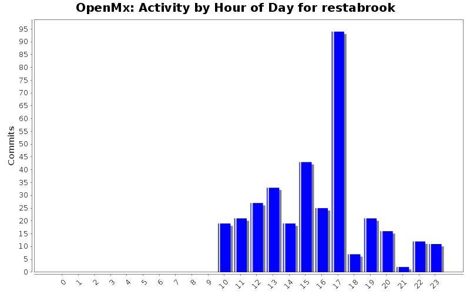
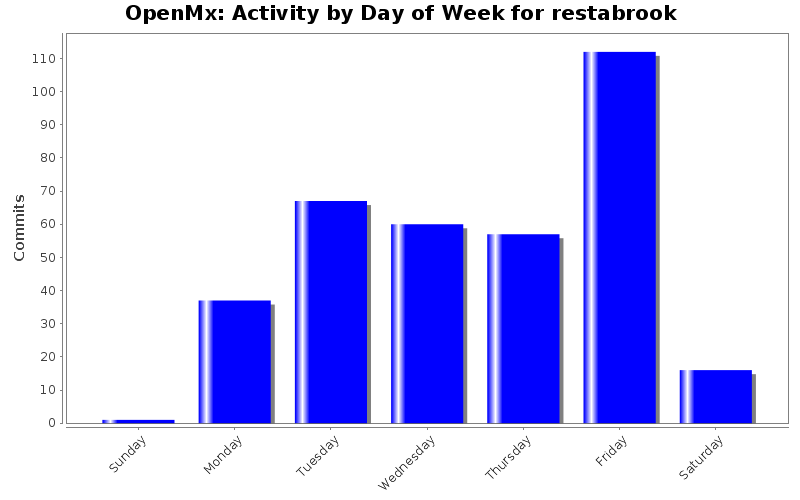
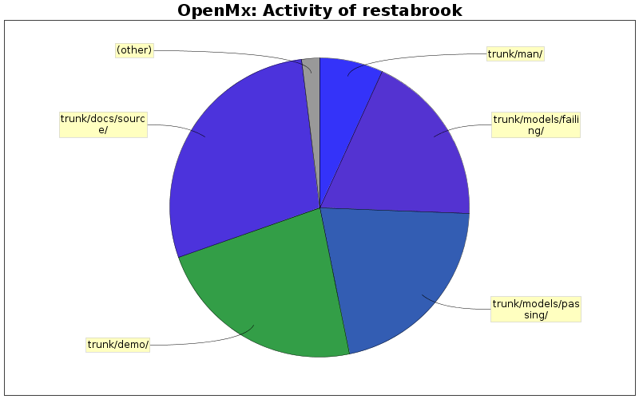

| Directory | Changes | Lines of Code | Lines per Change |
|---|---|---|---|
| Totals | 350 (100.0%) | 16221 (100.0%) | 46.3 |
| trunk/docs/source/ | 55 (15.7%) | 4627 (28.5%) | 84.1 |
| trunk/demo/ | 50 (14.3%) | 3702 (22.8%) | 74.0 |
| trunk/models/passing/ | 71 (20.3%) | 3427 (21.1%) | 48.2 |
| trunk/models/failing/ | 88 (25.1%) | 3047 (18.8%) | 34.6 |
| trunk/man/ | 76 (21.7%) | 1110 (6.8%) | 14.6 |
| trunk/R/ | 7 (2.0%) | 300 (1.8%) | 42.8 |
| trunk/src/ | 1 (0.3%) | 7 (0.0%) | 7.0 |
| trunk/ | 1 (0.3%) | 1 (0.0%) | 1.0 |
| trunk/docs/source/graph/ | 1 (0.3%) | 0 (0.0%) | 0.0 |

Updated documentation for mxCompare
28 lines of code changed in 1 file:
Updated 'Description'
1 lines of code changed in 1 file:
I finally put the brownie recipe in.
141 lines of code changed in 2 files:
Added example of cross thresholds to models/failing
56 lines of code changed in 1 file:
Added support for RMSEA when RMSEA squared is negative
5 lines of code changed in 1 file:
Fixed bug in mxSummary
1 lines of code changed in 1 file:
Timo's log det improvement
7 lines of code changed in 1 file:
Updated ordinal docs
199 lines of code changed in 2 files:
Added chapters for ordinal, both path and matrix, again
574 lines of code changed in 2 files:
Added chapters for ordinal, both path and matrix
2 lines of code changed in 2 files:
Updated docs and moved models from failing to passing
103 lines of code changed in 4 files:
Edits to mxSummary, added failing model
58 lines of code changed in 2 files:
Fixed Errors in GrowthMixtureModel docs
7 lines of code changed in 2 files:
Removved Debugging Info from summary
2 lines of code changed in 1 file:
Added independence likelihood, independence df, saturated df and fit statistics summary
157 lines of code changed in 1 file:
Updated JointFIMLRegresionTest.R
23 lines of code changed in 1 file:
Added failing joint FIML test to models/failing
11 lines of code changed in 1 file:
Update to Summary
45 lines of code changed in 1 file:
Added intervals to MxModel-class.Rd
3 lines of code changed in 1 file:
Fixed formatting error in GrowthMixtureModel_Path.rst
svn update
162 lines of code changed in 1 file:
(53 more)